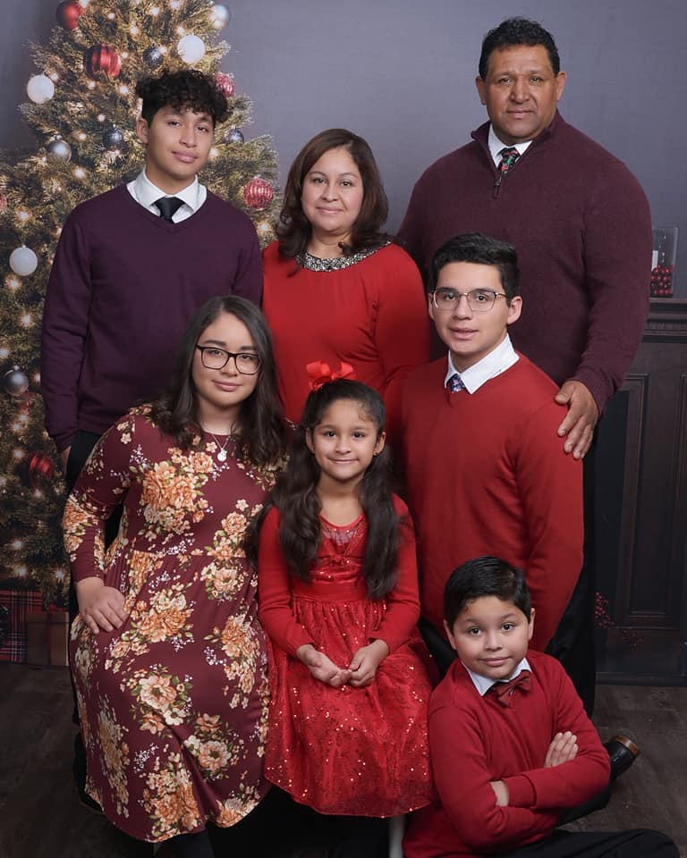
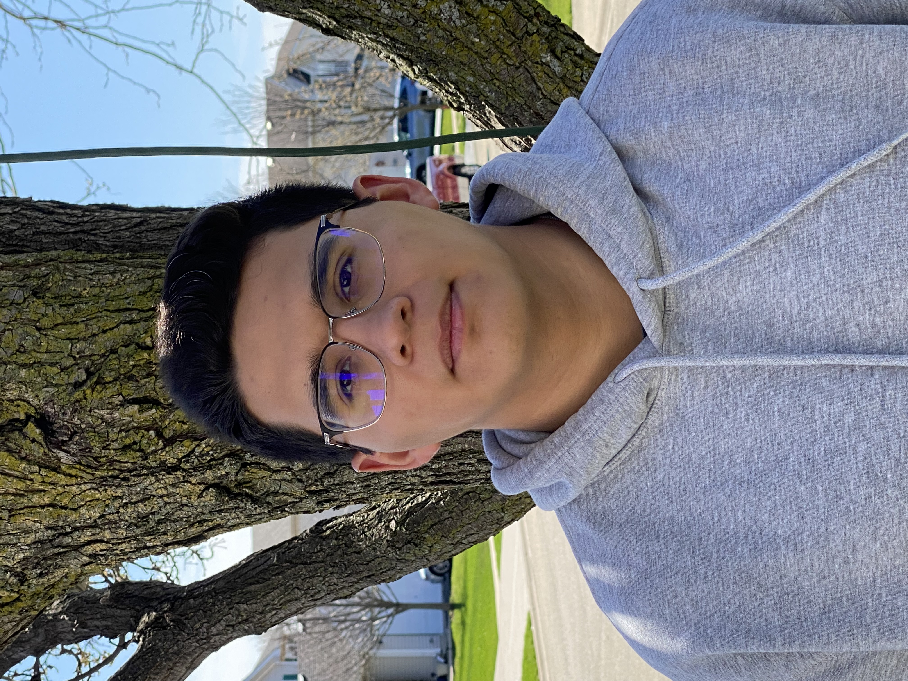

ANY type of activity where you are physically active
Raising Canes and Crumbl Cookies
Family:
Parents: Maria and Juan Escobar
Brothers: Brian and David
Sisters: Kenya and Jocelyn
Aspirations:
Graduate from BYU with a Masters in Accounting
Have a big family
Serve a Senior Mission for The Church of Jesus Christ of Latter-day Saints

Mini-Biography:
I was born to my parents Maria and Juan Escobar. They are natives to Mexico originating from a small townm of Coauixtla, Morelos.
They moved to Chicago, Illinois, in the 1990's, where they have been ever since. I was born in 2001 in Chicago, but have lived the majority
of my life in the area of Joliet, Illinois. I graduated from Joliet West High School and then servbed a mission for The Church
of Jesus Christ of Latter-day Saints between 2020-2022. I served in the Arizona Scottsdale Mission. After returning, I began my collegiate career at BYU
in the Spring of 2022, where I decided to major in Accounting.

In honor of my favorite childhood book series, Percy Jackson
This is one of my all time favorite youtube videos showcasing my favorite footballer, Lionel Messi